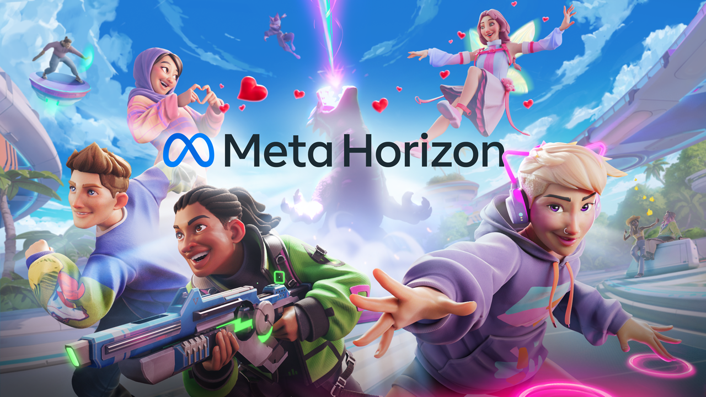

During my time working on Horizon Worlds, I was involved in several key areas of the platform, including the in-game economy, quests, and overall performance. I quickly adapted to Meta's internal software environment and tools, allowing me to contribute effectively from early on. My work focused on identifying and documenting multiple critical bugs, ensuring a high level of quality across systems that impacted both player experience and platform stability. Throughout the project, I maintained a strong standard of work, consistently delivering detailed bug reports and collaborating with engineers to support efficient resolution and improvement cycles.
I worked at Experis as a Test Associate III, supporting large-scale projects for high-profile clients — exploratory testing, detailed bug investigations and documentation. In April 2025 I was named Tester of the Month. Clear documentation has been one of my strengths, and engineers across several teams have used mine as a debugging reference.
The role gave me a view of enterprise-level workflows and the quality standards expected at the top of the industry. Working alongside cross-functional teams to get issues found, documented and resolved is where I built most of my communication skills.